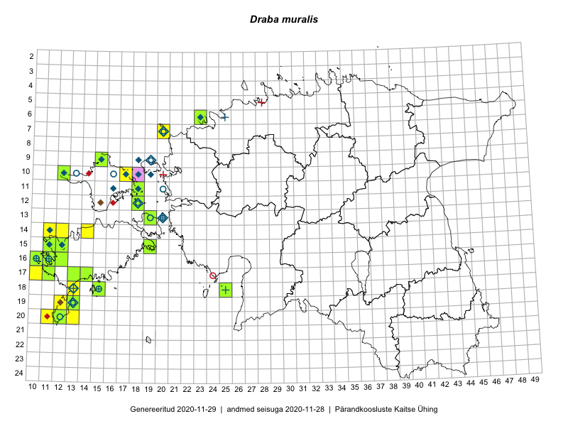

Draba muralis
Uuendatud: 2016-12-08
Kaardile koondatud taksonid: Draba muralis L.

Kaart põhineb 64 vaatlusel. Taime on leitud 23 ruudust.
| Ruut | Vaatleja(d) | Vaatlusaeg | Kirje tüüp | Viide andmebaasikirjele |
|---|---|---|---|---|
| 17-10 | Peedu Saar | 2015-08-07 | ruut/ala | vaata PlutoFis |
| 15-11 | Ott Luuk | 2015-07-01 | punkt | vaata PlutoFis |
| 15-11 | Ott Luuk | 2015-07-01 | punkt | vaata PlutoFis |
| 15-11 | Ott Luuk | 2015-07-01 | punkt | vaata PlutoFis |
| 15-11 | Ott Luuk | 2015-07-01 | punkt | vaata PlutoFis |
| 17-13 | Triin Reitalu, Mari Reitalu | 2015-05-18 | ruut/ala | vaata PlutoFis |
| 17-13 | Triin Reitalu, Mari Reitalu | 2015-05-18 | punkt | vaata PlutoFis |
| 17-13 | Mari Reitalu, Sirje Azarov | 2015-05-12 | ruut/ala | vaata PlutoFis |
| 17-13 | Mari Reitalu, Sirje Azarov | 2015-05-12 | punkt | vaata PlutoFis |
| 15-11 | Mari Reitalu | 2014-05-18 | ruut/ala | vaata PlutoFis |
| 15-11 | Mari Reitalu | 2014-05-17 | punkt | vaata PlutoFis |
| 20-11 | Mari Reitalu, Triin Reitalu | 2014-08-15 | ruut/ala | vaata PlutoFis |
| 17-10 | Mari Reitalu, Triin Reitalu | 2015-05-10 | ruut/ala | vaata PlutoFis |
| 17-10 | Mari Reitalu, Triin Reitalu | 2015-05-10 | punkt | vaata PlutoFis |
| 16-10 | Mari Reitalu, Triin Reitalu | 2015-05-08 | ruut/ala | vaata PlutoFis |
| 16-10 | Mari Reitalu, Triin Reitalu | 2015-05-08 | punkt | vaata PlutoFis |
| 15-11 | Mari Reitalu, Triin Reitalu | 2015-04-25 | ruut/ala | vaata PlutoFis |
| 15-11 | Mari Reitalu, Triin Reitalu | 2015-04-25 | punkt | vaata PlutoFis |
| 14-12 | Mari Reitalu, Triin Reitalu | 2015-05-24 | ruut/ala | vaata PlutoFis |
| 14-12 | Mari Reitalu, Triin Reitalu | 2015-05-24 | punkt | vaata PlutoFis |
| 15-12 | Mari Reitalu, Triin Reitalu | 2015-05-24 | ruut/ala | vaata PlutoFis |
| 15-12 | Mari Reitalu, Triin Reitalu | 2015-05-24 | punkt | vaata PlutoFis |
| 19-13 | Oliver Parrest | 2015-05-20 | ruut/ala | vaata PlutoFis |
| 17-14 | Mari Reitalu, Sirje Azarov | 2015-05-09 | ruut/ala | vaata PlutoFis |
| 20-13 | Mari Reitalu, Oliver Parrest | 2015-05-26 | ruut/ala | vaata PlutoFis |
| 20-11 | Mari Reitalu, Oliver Parrest | 2015-05-26 | ruut/ala | vaata PlutoFis |
| 14-11 | Mari Reitalu, Triin Reitalu | 2015-05-25 | punkt | vaata PlutoFis |
| 20-12 | Mari Reitalu, Oliver Parrest | 2015-05-26 | ruut/ala | vaata PlutoFis |
| 20-12 | Triin Reitalu, Sirje Azarov | 2015-05-30 | ruut/ala | vaata PlutoFis |
| 20-12 | Triin Reitalu | 2015-05-29 | punkt | vaata PlutoFis |
| 15-19 | Mari Reitalu, Sirje Azarov | 2015-05-16 | ruut/ala | vaata PlutoFis |
| 15-19 | Mari Reitalu, Sirje Azarov | 2015-05-16 | punkt | vaata PlutoFis |
| 17-14 | Mari Reitalu, Sirje Azarov | 2015-05-09 | punkt | vaata PlutoFis |
| 18-13 | Mari Reitalu, Oliver Parrest | 2015-05-27 | ruut/ala | vaata PlutoFis |
| 16-11 | Mari Reitalu, Triin Reitalu | 2015-05-28 | ruut/ala | vaata PlutoFis |
| 15-12 | Mari Reitalu, Triin Reitalu | 2015-04-25 | ruut/ala | vaata PlutoFis |
| 15-12 | Mari Reitalu, Triin Reitalu | 2015-04-25 | punkt | vaata PlutoFis |
| 17-11 | Mari Reitalu, Triin Reitalu | 2015-05-08 | ruut/ala | vaata PlutoFis |
| 16-11 | Triin Reitalu, Mari Reitalu | 2015-08-09 | ruut/ala | vaata PlutoFis |
| 16-10 | Sirje Azarov, Mari Reitalu | 2015-05-22 | ruut/ala | vaata PlutoFis |
| 16-10 | Sirje Azarov, Mari Reitalu | 2015-05-22 | punkt | vaata PlutoFis |
| 16-10 | Sirje Azarov, Mari Reitalu | 2015-05-22 | punkt | vaata PlutoFis |
| 16-10 | Sirje Azarov, Mari Reitalu | 2015-05-23 | punkt | vaata PlutoFis |
| 16-11 | Sirje Azarov, Mari Reitalu | 2015-05-23 | ruut/ala | vaata PlutoFis |
| 16-11 | Sirje Azarov, Mari Reitalu | 2015-05-23 | punkt | vaata PlutoFis |
| 16-12 | Mari Reitalu, Triin Reitalu | 2015-04-30 | ruut/ala | vaata PlutoFis |
| 10-12 | Meeli Mesipuu | 2015-05-27 | ruut/ala | vaata PlutoFis |
| 06-23 | Jaak-Albert Metsoja, Mari Metsoja, Ott Luuk | 2015-06-05 | ruut/ala | vaata PlutoFis |
| 16-12 | Triin Reitalu, Mari Reitalu | 2015-04-30 | punkt | vaata PlutoFis |
| 16-11 | Triin Reitalu, Mari Reitalu | 2015-05-28 | punkt | vaata PlutoFis |
| 18-15 | Oliver Parrest | 2015-05-23 | punkt | vaata PlutoFis |
| 19-12 | Oliver Parrest | 2015-05-17 | punkt | vaata PlutoFis |
| 20-11 | Oliver Parrest, Mari Reitalu | 2015-05-26 | punkt | vaata PlutoFis |
| 20-12 | Oliver Parrest, Mari Reitalu | 2015-05-26 | punkt | vaata PlutoFis |
| 20-12 | Oliver Parrest, Mari Reitalu | 2015-05-26 | punkt | vaata PlutoFis |
| 20-12 | Oliver Parrest, Mari Reitalu | 2015-05-26 | punkt | vaata PlutoFis |
| 20-12 | Oliver Parrest, Mari Reitalu | 2015-05-26 | punkt | vaata PlutoFis |
| 20-13 | Oliver Parrest, Mari Reitalu | 2015-05-26 | punkt | vaata PlutoFis |
| 18-13 | Oliver Parrest, Mari Reitalu | 2015-05-27 | punkt | vaata PlutoFis |
| 16-11 | Mari Reitalu, Triin Reitalu | 2015-08-09 | ruut/ala | vaata PlutoFis |
| 09-15 | Toomas Kukk, Peedu Saar | 2016-05-07 | ruut/ala | vaata PlutoFis |
| 10-17 | Toomas Kukk, Peedu Saar | 2016-05-08 | ruut/ala | vaata PlutoFis |
| 10-17 | Peedu Saar, Toomas Kukk | 2016-05-08 | punkt | vaata PlutoFis |
| 15-19 | Mari Reitalu, Triin Reitalu | 2016-06-30 | punkt | vaata PlutoFis |